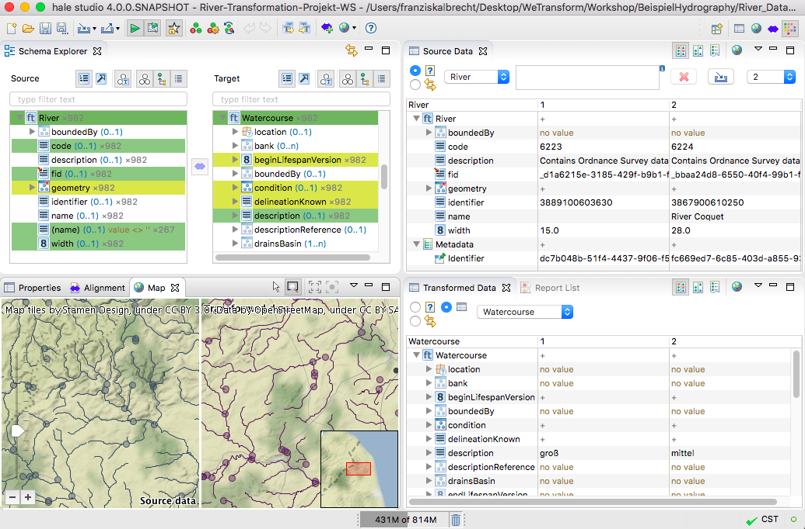

Thorsten perspective
The Thorsten perspective is how Thorsten works most efficiently
with hale»studio. He likes to have schemas, data and the alignment in his
reach all the time. For creating the alignment he prefers an approach
driven by sample data, so the data views and the map view play an
important role in his favorite perspective.
Tip: Everyone works differently - if you, like
Thorsten, find that there is a certain setup you feel more efficient
with, just save it as your own perspective. Go to the Window
menu, pick Save Perspective as, and enter the name under which
you want to store your perspective.

Following is a short description of the perspective's views:
- The Schema Explorer allows you to view the structure
of the source (left) and the target (right) schema in various ways
and to define mappings between the elements of the
schemas.
- The Source Data view displays samples of the loaded
source data. A filter query can be used to control which instances
are displayed.
- The Transformed Data view displays samples of the
transformed data. By default it is synchronized to the Source
Data view and contains the transformation result of the instances
represented there.
- The Map view provides you with a cartographic
representation of the data. Source and transformed data are displayed
alongside each other, with different layouts to choose from. The map
can be used to select instances for examination in the data views, or
vice versa.
- The Alignment view displays the current alignment per
type relation and allows editing or removing mapping cells.
- The Properties view displays information on the
current selection, in the above image this is the explanation of the
mapping cell selected in the active Alignment view.